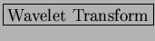
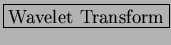

Next: Short Time Fourier Transform
Up: Get Input
Previous: Data Formats and Dimension
Contents
The preprocessing step includes processing raw data files using
STRFPAK's preprocessing methods and then preparing the right
data formats for the later analysis.
Once the
button is clicked, the
STRFPAK Preprocessing Menu window shown in Figure 3.2
pops up. There are two panels
in that window. One is for 1-D option and another is for
2-D option. Here the dimension refers to a spatial domain.
For example, for auditory systems, the 1-D non-time dimension could represent frequency; for visual systems, the 2-D dimensions could represent a 2-D spatial domain.
STRFPAK-2.0 provides only two transforms
of sound wave files:
 (STFT)
and
. The other transformations proposed on the preprocessing menu are currently under development.
(STFT)
and
. The other transformations proposed on the preprocessing menu are currently under development.
Figure 3.2:
The Preprocessing Menu in STRFPAK
|
|
2004-08-09